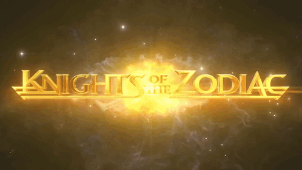
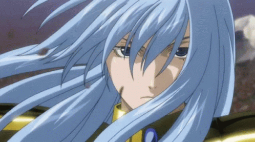
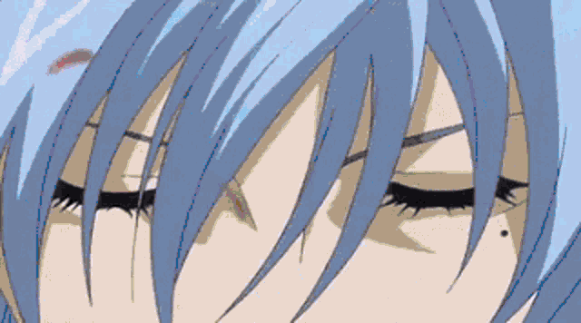
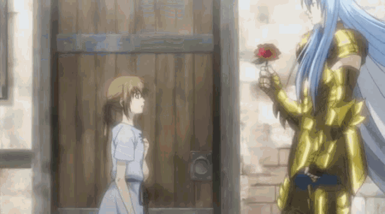
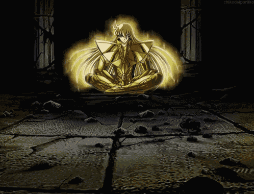
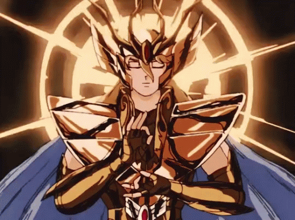
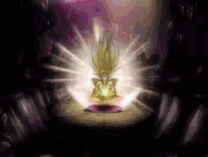
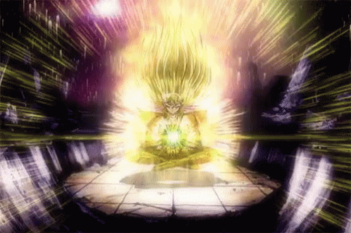

Gabriel Taveira
19/07/2026
 Shounen
Shounen
Shounen
Shounen
Saint Seiya (Os Cavaleiros do Zodíaco) foi o primeiro anime que eu assisti e marcou minha vida para sempre! Lançado em 1986, essa obra-prima de Masami Kurumada conta a história de jovens guerreiros protegidos pelas constelações, que lutam para proteger a deusa Athena e o mundo.
Com uma trilha sonora épica, armaduras divinas e uma história cheia de emoção, Saint Seiya me ensinou sobre amizade, determinação e nunca desistir dos seus sonhos. Eu amo TODOS os universos de CDZ - o clássico, o Next Dimension, o Lost Canvas, os filmes, os jogos... tudo! 💙

⚔️ "Queime sua alma, Cavaleiro!" - O cosmo é a força que nos une!
🌟 Meus Personagens Favoritos:
🐟 Albáfica de Peixes - O Cavaleiro de Ouro mais bonito e trágico







Albáfica de Peixes é o Cavaleiro de Ouro mais belo e trágico de todo o Lost Canvas. Sua história é marcada por amor, sacrifício e uma beleza que encanta e aterroriza. 🌹✨
📺 Os momentos mais marcantes de Albáfica:
• 🌹 Batalha contra os Espectros - Albáfica mostrou toda a sua força ao enfrentar os guerreiros de Hades, mesmo sabendo que poderia morrer.
• 💔 Sacrifício - Sua história é uma das mais tristes do Lost Canvas. Ele lutou até o fim para proteger aqueles que amava.
• 🌸 Rosas Venenosas - Suas rosas são tão belas quanto mortais. Uma metáfora perfeita para sua própria existência.
• 👁️ Beleza e Tragédia - Albáfica é um personagem que mostra que a beleza pode ser tanto uma bênção quanto uma maldição.
⚔️ Curiosidades sobre Albáfica:
• 🌹 Ele é considerado o Cavaleiro de Ouro mais bonito de todos os tempos
• 💔 Sua história de amor é uma das mais tristes do universo CDZ
• 🌸 Suas rosas venenosas são uma extensão de sua alma
• 🛡️ Ele é um dos Cavaleiros mais fortes do século XVIII
• 🌟 Sua beleza é tão grande que até os inimigos hesitam em atacá-lo
🌹 A tragédia de Albáfica:
Albáfica é um personagem que carrega um fardo imenso. Sua beleza é tão intensa que
muitas vezes ofusca sua verdadeira força. Ele é um Cavaleiro que luta não apenas
por Athena, mas por um amor que transcende a vida e a morte.
Albáfica é a prova de que a beleza e a dor podem andar juntas. 💔
"As rosas mais belas são as que possuem os espinhos mais venenosos."
— Albáfica de Peixes, o Cavaleiro de Ouro mais bonito e trágico —
🌹 "A verdadeira beleza está em lutar pelo que se ama."
👁️ Shaka de Virgem - O Cavaleiro de Ouro mais próximo de Deus








Shaka de Virgem é, sem dúvida, um dos Cavaleiros de Ouro mais poderosos e respeitados de todo o Santuário. Conhecido como o "Homem Mais Próximo de Deus", sua sabedoria e força são lendárias! 👁️✨
📺 Os momentos mais marcantes de Shaka:
• ⚔️ Batalha contra Ikki - A luta entre Shaka e Ikki de Fênix é uma das mais épicas de todo o anime. Ikki foi o único Cavaleiro de Bronze que conseguiu abrir os olhos de Shaka!
• 🏛️ Santuário - Shaka sempre foi um dos Cavaleiros mais leais a Athena, mesmo quando as circunstâncias eram difíceis.
• 🌑 Batalha contra Hades - Na Guerra Santa, Shaka enfrentou os Espectros com uma coragem inabalável.
• 💫 Morte e Renascimento - Shaka é um dos poucos Cavaleiros que compreende o ciclo da vida e da morte, o que o torna ainda mais místico.
⚔️ Curiosidades sobre Shaka:
• 👁️ Seus olhos são naturalmente azuis, mas ele mantém fechados para conter seu cosmo
• 🧘 Ele é um monge budista, o que explica sua sabedoria e paz interior
• ⚔️ Shaka é um dos poucos Cavaleiros que derrotou um Cavaleiro de Ouro sozinho
• 🛡️ Sua armadura de Virgem é considerada uma das mais bonitas entre os Cavaleiros de Ouro
• 🌟 Ele é o único Cavaleiro que conseguiu entender o verdadeiro significado do cosmo
🌟 A imponência de Shaka:
A maneira como ele aparece na série, a forma como as pessoas o admiram e o temem...
A série mostrou perfeitamente a presença dele.
Shaka não é apenas um Cavaleiro; ele é uma lenda viva!
"O cosmo é a verdade que existe dentro de cada ser. Quem o compreende, compreende tudo."
— Shaka de Virgem, o Homem Mais Próximo de Deus —
👁️ "A verdadeira força está na sabedoria."
🏛️ Atena - A Deusa da Sabedoria e da Guerra


Atena, a Deusa da Sabedoria e da Guerra, é uma das personagens mais maravilhosas e inspiradoras de todo o universo de Cavaleiros do Zodíaco. Ela é a alma e o coração de toda a história! 🏛️✨
👑 O que torna Atena tão incrível:
• 🏛️ Sabedoria Divina - Ela é a deusa da sabedoria, e isso se reflete em cada decisão que ela toma. Sua inteligência e estratégia são impecáveis!
• ⚔️ Força e Coragem - Mesmo sendo uma deusa, ela não hesita em lutar ao lado de seus Cavaleiros. Ela enfrenta Hades, Poseidon e outros deuses com bravura!
• ❤️ Compaixão - Atena ama a humanidade e luta para proteger cada ser humano. Seu coração é puro e sua bondade é infinita.
• 🦉 Armaduras Divinas - A armadura de Atena é simplesmente linda! O capacete, a lança, o escudo... Tudo nela é perfeito! 💫
• 🌟 Carisma - Ela inspira lealdade e devoção em todos os Cavaleiros. Seus guerreiros dariam a vida por ela, e isso diz muito sobre sua grandeza!
🏛️ A importância de Atena na série:
Desde o clássico até os spin-offs, Atena é o centro de tudo. Ela é a razão pela qual os Cavaleiros de Ouro, Prata e Bronze existem.
Ela é a luz que guia a humanidade contra as trevas.
Sem Atena, não haveria Cavaleiros do Zodíaco!
⚔️ Curiosidades sobre Atena:
• 🏛️ Ela é a filha de Zeus e irmã de Hades e Poseidon
• 🦉 Sua armadura divina é considerada a mais poderosa de todas
• ⚔️ Ela já enfrentou Hades em várias Guerras Santas
• 🌟 Seu símbolo é a coruja, representando sabedoria
• 💫 Ela renasce a cada 250 anos para proteger a Terra
📺 Os momentos mais marcantes de Atena:
• 🗡️ Quando ela se sacrifica para salvar os Cavaleiros
• ⚔️ Quando ela luta lado a lado com Seiya e os outros
• 🏛️ Quando ela usa seu escudo divino para derrotar Hades
• 💫 Quando ela renasce e traz esperança à humanidade
"Eu lutarei ao lado de vocês, não como uma deusa, mas como uma guerreira que ama a humanidade."
— Atena, Deusa da Sabedoria e da Guerra —
🦉 "A sabedoria é a maior arma contra as trevas."
🌑 Hades - O Deus do Submundo e Senhor dos Espectros


Hades, o Deus do Submundo, é um dos personagens mais imponentes e marcantes de todo o universo de Cavaleiros do Zodíaco. Sua presença é simplesmente AVASSALADORA! ⚡
👑 O que torna Hades tão incrível:
• 🌑 Imponência - Ele transmite uma autoridade divina inquestionável. Quando ele aparece, todo mundo sente o peso da sua presença.
• ⚔️ Armadura Divina - A Surplice do Hades é uma das mais bonitas e detalhadas de todo o anime. Aquela armadura negra com detalhes dourados e a capa... É de tirar o fôlego! 🖤
• 👁️ Aparência - O cabelo escuro, o olhar penetrante, a postura... Tudo nele transmite poder e majestade.
• 😱 Temor e Admiração - Assim como Shaka, Hades é temido e admirado. Os Espectros o seguem com devoção absoluta, e os Cavaleiros de Athena tremem diante dele.
📺 A série mostrou perfeitamente a presença dele:
Desde o momento em que ele aparece pela primeira vez, possuindo o corpo de Shun,
até a batalha final no Submundo, Hades é retratado como um deus frio, calculista e implacável.
Mas ao mesmo tempo, ele tem uma tristeza em seus olhos que mostra o peso de sua existência.
⚔️ Curiosidades sobre Hades:
• 🏛️ Ele é o irmão mais velho de Poseidon e Zeus
• 🌹 Governa o Submundo com mão de ferro
• 🖤 Seus Espectros são os guerreiros mais temidos
• ⚔️ Ele enfrentou Athena em várias guerras santas
• 🌑 Sua técnica mais poderosa é a "Grande Escuridão"
"A morte não é o fim, mas apenas o começo de uma nova existência."
— Hades, Deus do Submundo —
💙 O que eu amo em Saint Seiya:
Aberturas
Épicas
Armaduras
Divinas
Hierarquia
dos Cavaleiros
Universos
Todos eles!
🔥 Informações:
• 📺 Anime: Saint Seiya (Os Cavaleiros do Zodíaco)
• 📅 Estreia: 1986
• 🎬 Estúdio: Toei Animation
• 📝 Criador: Masami Kurumada
• 🏛️ Deusa: Athena
• ⚔️ Cavaleiros: Bronze, Prata, Ouro e Divinos
🌟 Universos que eu amo:
• 📜 Clássico (1986)
• 🌙 Next Dimension
• 🎨 Lost Canvas
• 🎬 Filmes
• 🎮 Jogos
"O cosmo é a energia que existe dentro de cada um de nós. Quanto mais você acredita em si mesmo, mais forte ele se torna."
— Saint Seiya —